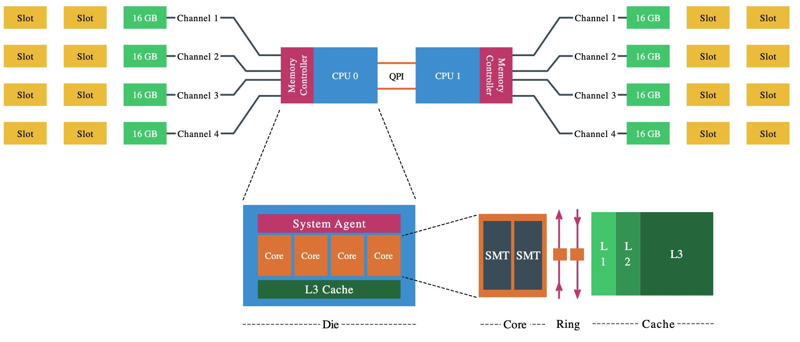
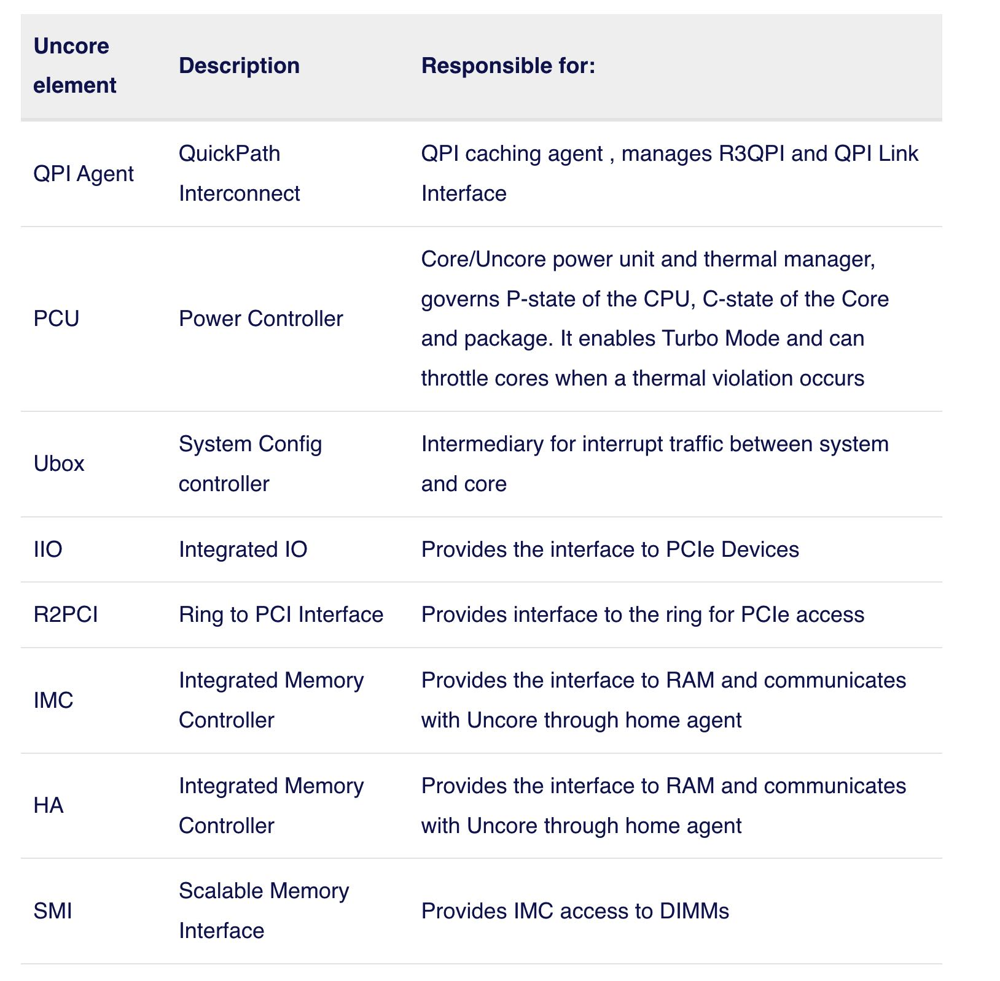
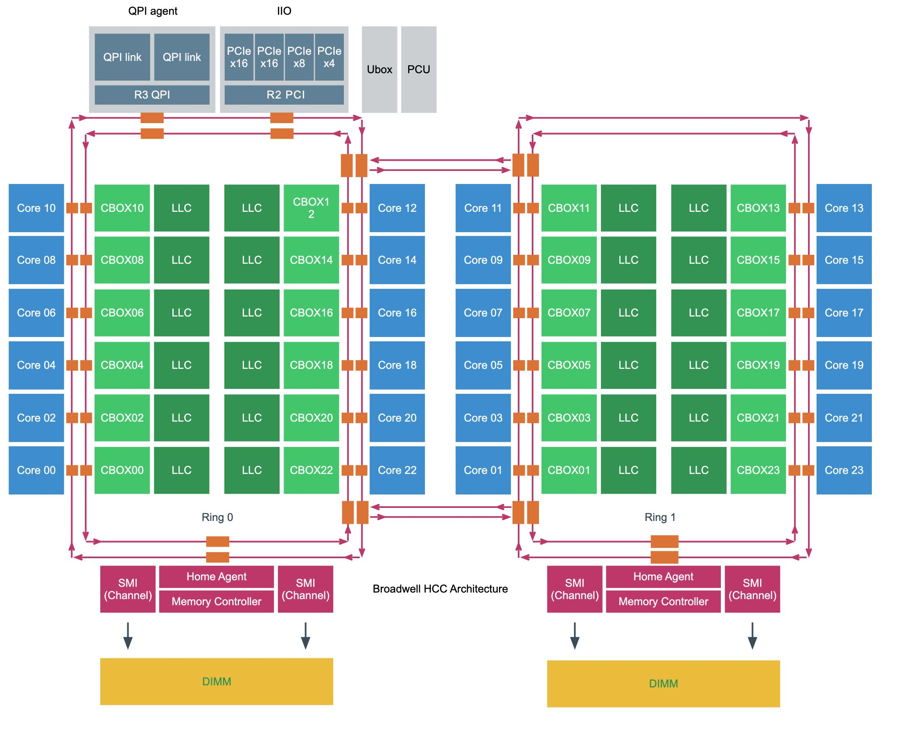
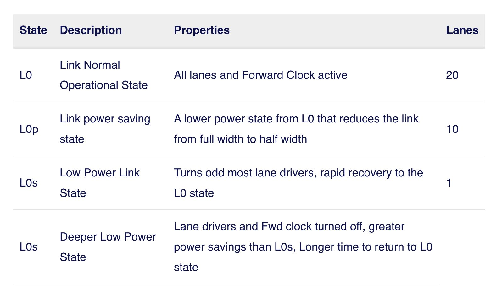

NUMA DEEP DIVE PART 2: SYSTEM ARCHITECTURE
https://frankdenneman.nl/2016/07/08/numa-deep-dive-part-2-system-architecture/
https://plantegg.github.io/2021/06/01/CPU%E7%9A%84%E5%88%B6%E9%80%A0%E5%92%8C%E6%A6%82%E5%BF%B5/
术语解释：
- CPU package. 购买到的产品，包含die/dice? 并且安装在主板的CPU socket上
- CPU die 包含 CPU cores以及system agent. 关于Die是怎么制造出来的可以看链接。
- CPU core 可以使用超线程HT(hyper threading)技术虚拟成为2个核，增加的是逻辑处理单元， 而物理执行单元(ALU, FPU)以及Cache没有增加都是共享的。

There a are a lot of different names used for something that is apparently the same thing. Let’s review the terminology of the Physical CPU and the NUMA architecture. The CPU package is the device you hold in your hand, it contains the CPU die and is installed in the CPU socket on the motherboard. The CPU die contains the CPU cores and the system agent. A core is an independent execution unit and can present two virtual cores to run simultaneous multithreading (SMT). Intel proprietary SMT implementation is called Hyper- Threading (HT). Both SMT threads share the components such as cache layers and access to the scalable ring on-die Interconnect for I/O operations.
Interesting entomology; The word “die” is the singular of dice. Elements such as processing units are produced on a large round silicon wafer. The wafer is cut “diced” into many pieces. Each of these pieces is called a die.
ESXi在实现虚拟化的时候也会考虑NUMA的影响：如果虚拟出来的vCores会均分在NUMA nodes上，并且对虚拟出来的操作系统内部也会展现出物理NUMA布局，
Each core can address up to 128 GB of memory, as described earlier the NUMA scheduler of the ESXI kernel attempts to place and distribute vCPU as optimal as possible, allocating as much local memory to the CPU workload that is available. When the number of VCPUs of a virtual machine exceeds the core count of a physical CPU, the ESXi server distributes the vCPU even across the minimal number of physical CPUs.It also exposes the physical NUMA layout to the virtual machine operating system, allowing the NUMA- aware operating system and / or application to schedule their processes as optimal as possible. To ensure this all occurs, verify if the BIOS is configured correctly and that the setting NUMA = enabled or Node Interleaving is disabled. In this example a 12 vCPU VM is running on the dual Intel 2630 v4 system, each containing 10 cores.
为了让虚拟机可以感知到NUMA，我们通常需要对BIOS进行设置。ACPI "BIOS"在系统启动的时候会创建SRAT(system resource allocation table), 这个表格会描述物理CPU和内存布局情况，ESXi会根据SRAT来感知到NUMA。如果在BIOS设置成为之前提到的Node Interleaving Eanbled的话，那么NUMA就会变成SUMA(Suffiiciently Uniform Memory Arch). 这种模式只不过是 “让操作系统认为" 内存在每个CPU距离是相同的，但是实际上依然存在距离/延迟差异问题。
ACPI "BIOS"来会提供System Locality Information Table(SLIT)来描述每个NUMA node之间的大致距离情况，但是ESXi并不会使用这个数据，而是自己去probe来测量具体延迟情况。
Node Interleaving Enabled: SUMA. One question that is asked a lot is how do you turn off NUMA? You can turn off NUMA, but remember your system is not a transformer, changing your CPUs and memory layout from a point-to-point-connection architecture to a bus system. Therefore, when enabling Node Interleaving the system will not become a traditional UMA system. Part 1 (http://frankdenneman.nl/2016/07/07/numa-deep-dive-part-1-uma-numa/) contains a more info on SUMA.
Modern point-to-point architectures moved from a ring topology to a full mesh topology reducing hop counts, reducing the importance of SLIT. Many server vendor whitepapers describing best practices for VMware ESXi recommend enabling ACPI SLIT. Do not worry if you forgot to enable this setting as ESXi does not use the SLIT. Instead, the ESXi kernel determines the inter-node latencies by probing the nodes at boot-time and use this information for initial placement of wide virtual machines. A wide virtual machine contains more vCPUs than the Core count of a physical CPU, more about wide virtual machines and virtual NUMA can be found in the next article.
Uncore 可以认为是CPU中和计算不相关，但是却非常影响性能的模块集合，包含了下面这么几个部分，我大部分也不是很理解，就看个大概吧。
As mentioned in part 1, the Nehalem microarchitecture introduced a flexible architecture that could be optimized for different segments. In order to facilitate scalability, Intel separated the core processing functionality (ALU, FPU, L1 and L2 cache) from the ‘uncore’ functionality. A nice way to put it is that the Uncore is a collection of components of a CPU that do not carry out core computational functions but are essential for core performance. This architectural system change brought the Northbridge functionality closer to the processing unit, reducing latency while being able to increase the speed due to the removal of serial bus controllers.

下图是个Intel Xeon v4(Broadwell) HCC(High Core Count)结构图，CBOX是(Cache Box用来管理Cache一致性的). 可以看到有两个ring, 不同core之间通信距离(hop)是不同的，但是估计差距不会那么大。如果要去访问remote memory的话，那么就需要通过R3 QPI/QPI Agent访问其他node上的memory.

QPI (Quick Path Interconnect Link)
QPI性能单位是GT/s(Giga transfers per seconds). 然后转换成为带宽的话，和memory channel width有关系。如果channel width是16bits也就是2个字节的话，同时考虑双向传输，那么带宽就是GB/s = x GT/s * 4.
As mentioned in part 1, the Nehalem microarchitecture introduced a flexible architecture that could be optimized for different segments. In order to facilitate scalability, Intel separated the core processing functionality (ALU, FPU, L1 and L2 cache) from the ‘uncore’ functionality. A nice way to put it is that the Uncore is a collection of components of a CPU that do not carry out core computational functions but are essential for core performance. This architectural system change brought the Northbridge functionality closer to the processing unit, reducing latency while being able to increase the speed due to the removal of serial bus controllers.
Haswell (v3) and Broadwell (v4) offer three QPI clock rates, 3.2 GHz, 4.0 GHz, and 4.8 GHz. Intel does not provide clock rate details, it just provide GT/s. Therefore to simplify this calculations, just multiple GT/s by two (16 bits / 8 bits to bytes = 2). Listed as 9.6 GT/s a QPI link can transmit up to 19.2 GB/s from one CPU to another CPU. As it is bidirectional, it can receive the same amount from the other side. In total, the two 9.6 GT/s links provide a theoretical peak data bandwidth of 38.4 GB/sec in one direction.
There is no direct relationship with core-count and QPI link speeds. For example the v4 product family features 3 8-core count CPUs, each with a different QPI link speed, but there are also 10 core CPUs with a bandwidth of 8.0 GT/s. To understand the logic, you need to know that Intel categorizes their CPU product family into segments. Six segments exist; Basic, Standard, Advanced, Segment Optimized, Low Power and Workstation.
一些服务器允许通过BIOS来配置QPI Power Management. 可能是QPI这个东西对能耗要求比较高。QPI包含transmit circuit(TX), receive circuit(RX), 1 clock lane和20 data lances. 节能上主要还是关闭data lances. 大约有这么几种节能方式：下图是有点错误的，
- L0 20 data lanes
- L0p 10 data lanes (使用率超过80-90%会切换到L0)
- L0s 1 data lane (~10 ns)
- L1 clock lane (~ms)

Some servers allow you to configure the QPI Link Power Management in the BIOS. When enabled, the buffers in the QPI links are allowed to enter a sleep state when the links are not being used. When there is relatively little traffic, the QPI link shuts down some of its data transmissions lanes, this to achieve power consumption reduction. Within a higher state, it only reduces bandwidth, when entering a deeper state memory access will occur latency impact.
A QPI link consists of a transmit circuit (TX), 20 data lanes, 1 clock lane and a receive circuit (RX). Every element can be progressively switched off. When the QPI is under heavy load it will use all 20 lanes, however when experiencing a workload of 40% or less it can decide to modulate to half width. Half width mode, called L0p state saves power by shutting down at least 10 lanes. The QPI power management spec allows to reduce the lanes to a quarter width, but research has shown that power savings are too small compared to modulating to 10 links. Typically when the 10 links are utilized for 80% to 90% the state shifts from L0p back to the full-width L0 state. L0p allows the system to continue to transmit data without any significant latency penalty. When no data transmit occurs, the system can invoke the L0s state. This state only operates the clock lane and its part of the physical TX and RX circuits, due to the sleep mode of the majority of circuits (lane drivers) within the transceivers no data can be sent. The last state, L1, allows the system to shut down the complete link, benefitting from the highest level of power consumption.
L0s and L1 states are costly from a performance perspective, Intel’s’ patent US 8935578 B2 (https://www.google.com/patents/US8935578) indicates that exiting L1 state will cost multiple microseconds and L0s tens of nanoseconds. Idle remote memory access latency measured on 2133 MHz memory is on average 130 nanoseconds, adding 20 nanoseconds will add roughly 15% latency and that’s quite a latency penalty. A low power state with longer latency and lower power than L0s and is activated in conjunction with package C-states below C00.